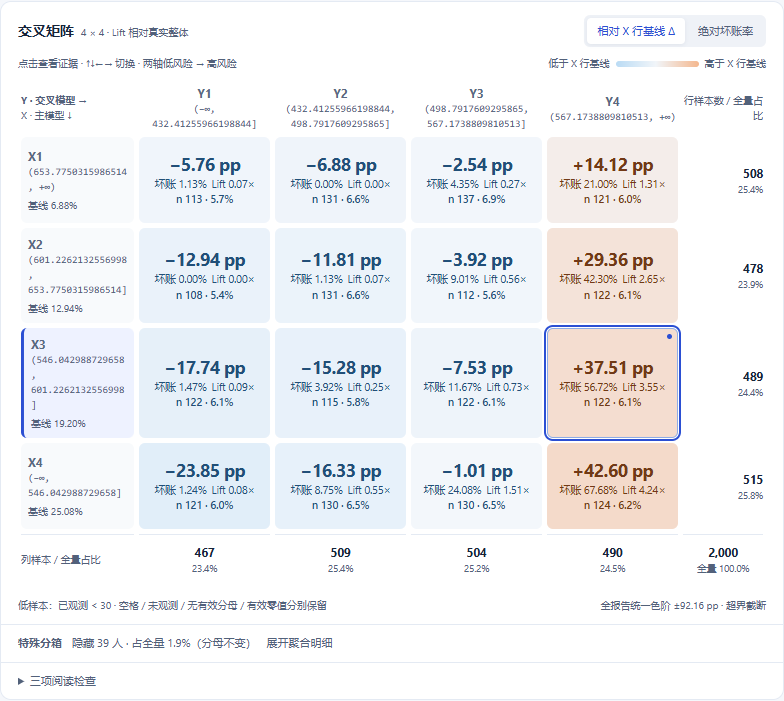

真实 Score Cross 矩阵 · Δ 单位 pp

同一选格 · 公共 query_page 摘录
{
"report_id": "066dccc0-b803-4f2a-8f3c-2ace86cf0ada",
"table": "cells",
"scope": {
"group": "discovery",
"target": "bad30",
"period": "202601"
},
"x_bin": "b1",
"y_bin": "b3",
"status": "valid",
"sample_count": 122,
"observed_sample_count": 117,
"bad_sample_count": 65,
"observed_weight_sum": 119.31605708882033,
"bad_weight_sum": 67.67070266830763,
"bad_rate": 0.5671550361233672,
"delta_vs_row": 0.3751357433077731,
"lift_vs_overall": 3.549613382315548
}